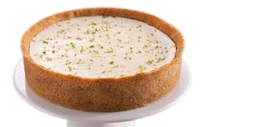
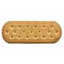
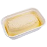

Torta de limão

Ingredientes (15 porções)
- 200 g de biscoito de maisena 
- 150 g de margarina 
- 1 lata de leite condensado (395 g)
- 1 caixa de creme de leite (200 g)
- suco de 4 limões
- raspas de 2 limões
- 3 ou 4 claras de ovo
- 3 colheres (sopa) de açúcar
- raspas de 2 limões para decorar


Modo de preparo - ⏰ 15min | Espera ⏳ 30min
- Triture o biscoito de maisena em um liquidificador ou processador.
- Junte a margarina e bata mais um pouco.
- Despeje a massa em uma forma de fundo removível (27 cm de diâmetro).
- Com as mãos, espalhe os biscoitos triturados no fundo e nas laterais da forma, cobrindo toda área de maneira uniforme.
- Leve ao forno médio (180° C), preaquecido, por aproximadamente 10 minutos.
- Bata todos os ingredientes no liquidificador (exceto as raspas de limão) até obter um creme liso e firme.
- Recheie a massa já assada e leve à geladeira por 30 minutos.
- Bata as claras em neve e acrescente o açúcar.
- Misture até obter um ponto de suspiro e leve ao forno até dourar.
- Desenforme a torta (sem retirar o fundo falso), despeje a cobertura e acrescente as raspas de limão.
- Massa -
- Recheio -
- cobertura -
⤆Voltar